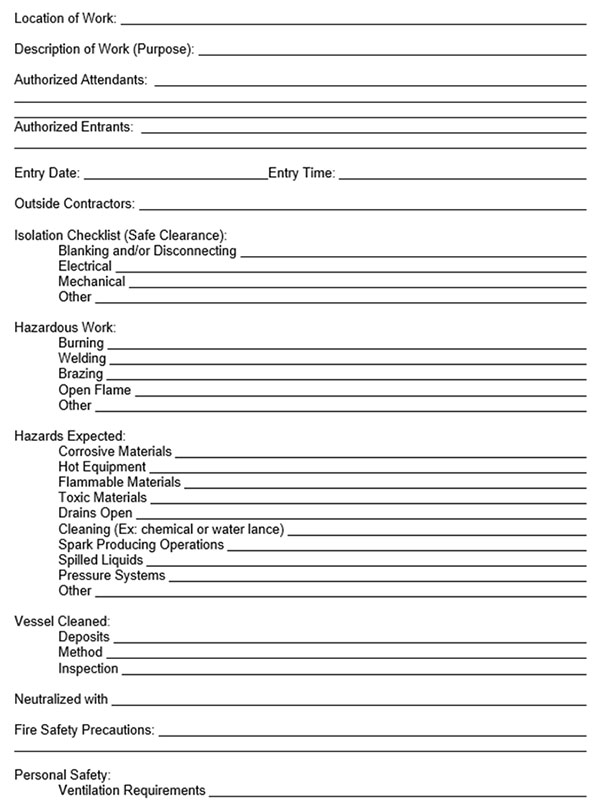
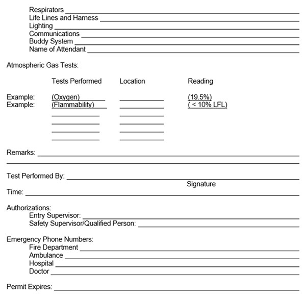

34.A General
34.A.08–34.A.09
34.A.08 Employee Training. All employees entering PRCS or NPRCS, authorized attendants, supervisors and managers, and workers within visual contact of the CS shall be trained to understand the requirements of the facility/site-specific CSE Program and procedures and emergency retrieval procedures.
- Initial CS training. All entrants, authorized attendants, and supervisor or managers shall receive an initial CS training course that includes hands-on practical exercise with all the equipment; rescue exercise; and completing the CS permit. The training shall include, as a minimum: the roles and responsibilities in conducting an entry; specialized training on the use, calibration, and maintenance of monitoring, communications, and retrieval equipment; the hazards of the entry and the control of the hazards of the entry.
- Before each activity requiring entry into a CS, the entrant, authorized attendants, supervisor/managers, and workers in close proximity, shall review the entry procedures, the use of the air monitoring, PPE, and retrieval equipment. Emergency responders shall be invited to the training review. If it has been over a year since the initial training, a rescue exercise shall be part of the training review.
- Training shall be documented and include a roster of those attending and topics discussed.
34.A.09 Rescue and Emergency Services. The CSCP shall develop or establish rescue and emergency services for PRCS entry. Emergency responders shall be notified of the training and at least annually, or immediately prior to each entry, shall have participated in an emergency response drill for retrieval of an employee or dummy from the CSs.
FORM 34-1
Confined Space Entry Permit


{kind=link}
{kind=link}